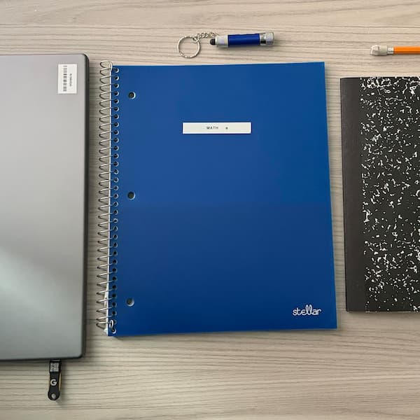

Memory 01
The backpack
My backpack follows me between different places and responsibilities. It may look like a collection of ordinary supplies, but each pocket carries part of my daily routine.
Back to the backpackEvery Picture / Code Version 1
A backpack holds more than the things we need for the day. It also carries small reminders of where we have been, what we are working toward, and what matters to us.
Five pieces of my everyday life
Move over a photograph to bring it back into color.
Memory 01
My backpack follows me between different places and responsibilities. It may look like a collection of ordinary supplies, but each pocket carries part of my daily routine.
Back to the backpack
Memory 02
My laptop and notebooks connect to projects, deadlines, and progress. They remind me that the things I carry are also connected to what I am trying to accomplish.
Back to the backpack
Memory 03
My wallet, keys, and AirPods are small things I reach for almost automatically. They represent independence, movement, and the repeated routines that shape my days.
Back to the backpack
Memory 04
During Aggie Orientation, I wrote a motivational note that said, "Keep going for your family." I kept it because its message still reminds me why I want to keep moving forward.
Back to the backpack
Memory 05
My headphones and desk setup represent time spent focusing, creating, and enjoying my interests. They show a side of my routine that is more personal than a class schedule.
Back to the backpackWhat this object remembers
In version-2, selecting an object will reveal its story here.